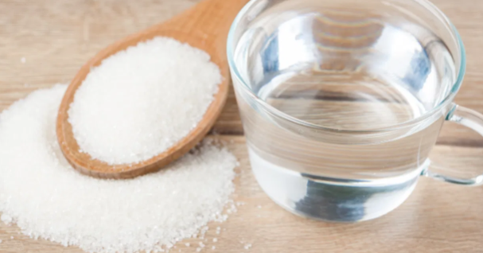
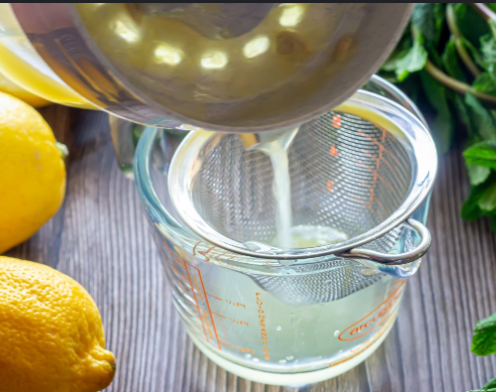
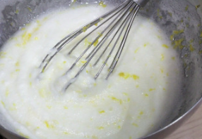
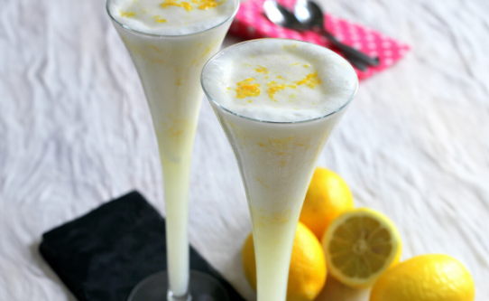

Volver al menú
Receta Sorbete de limón
En esta web vais a poder ver como hacer el mejor sorbete paso a paso!!
Ingredientes (4 Pax)
Para hacer nuestro maravilloso sorbete para 4 personas necesitaremos:
- 250ml Zumo de limón
- 2 Claras de huevo
- 500ml agua
- 200g de Azucar
Paso a Paso de la Receta
- Dificultad: Media
- Tiempo de elaboración 20 min
- Tiempo de reposo 2h
- Primer paso: Juntamos el agua con el azucar y lo ebullimos mientras lo remenamos para hacer un almíbar, cuando esté hecho, lo dejaremos enfriar.

- Segundo paso: Mezclamos y colamos el zumo de limón junto al almíbar y lo dejaremos en el congelador durante 2h

- Tercer paso: Montaremos las 2 claras de huevo y las juntaremos con el zumo que tenemos preparado

- Último paso: Emplataremos y lo dejaremos en el congelador hasta el momento de servirlo

Resultado Final
Una vez realizados todos los pasos anteriores ya habreis acabado la receta!! En la imagen podeis ver el resultado final de como os quedará si lo haceis bien!!

Volver al principio de la receta